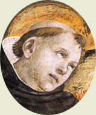
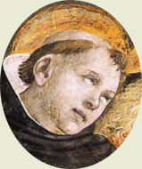

|  |
|---|
Textum a L. A. Kennedy 1978 editum in
"Archives d'Histoire Doctrinale et Littéraire du Moyen Âge"
recognovit Enrique Alarcón et instruxit

|  |
|---|

[88188] De cognitione animae, tit. 2 Et videtur quod non sit immortalis.
[88189] De immortalitate animae, arg. 1 Differentia enim superioris generis divisiva uniformiter participatur ab omnibus inferioribus. Corruptibile autem est differentia divisiva entis; ens enim dividitur per corruptibile et incorruptibile. Ergo omnia corruptibilia uniformiter corruptibilia sunt. Sed lapis et planta et brutum sic corruptibilia sunt quod, eis corruptis, eorum corporum forme desinunt esse. Ergo, et homine corrupto, eius forma, scilicet anima humana, desinit esse. Ergo et cetera.
[88190] De immortalitate animae, arg. 2 Preterea. Esse formam essentialiter convenit anime; si enim per accidens homini inesset, homo non esset quid sed quale. Remoto autem eo quod est alicui essentiale, res illa esse non potest. Cum igitur, corrupto corpore, anima desinat esse forma, videtur quod, post corporis corruptionem, anima esse non possit. Ergo et cetera.
[88191] De immortalitate anime, arg. 3 Preterea. Primus defectus creature est esse de nihilo, et ex hoc alii consequuntur, ut mutabilitas, corruptibilitas, et huiusmodi. Sed anima est de nihilo cum sit creatura quedam. Ergo et cetera.
[88192] De immortalitate anime, arg. 4 Preterea. Anima secundum suam naturam non est superior Angelo. Angelus autem secundum Augustinum est gratia, non natura, immortalitatem suscipiens. Ergo nec anima per suam naturam est immortalis.
[88193] De immortalitate anime, arg. 5 Preterea. Ubicumque est aliqua compositio, ibi est possibilitas ad dissolutionem. In anima est aliqua compositio, saltem ex quo est et quod est. Ergo est dissolubilis et non incorruptibilis.
[88194] De immortalitate anime, arg. 6 Si dicitur quod illa sola compositorum dissolubilia sunt que ex contrariis componuntur, contra est quod dicit Plato in Tymeo quod corpora celestia natura sua sunt dissolubilia, voluntate autem Dei indissolubilia; et tamen corpora celestia non sunt ex contrariis composita. Non igitur sola illa dissolubilia sunt que ex contrariis componuntur.
[88195] De immortalitate anime, arg. 7 Preterea. Quod convenit alicui secundum se, per prius et magis dicitur de eo quam quod convenit ei per comparationem ad aliud. Immortalitas autem anime humane convenit inquantum ad aliud comparatur, prout scilicet ordinatur ad beatitudinem; in se autem considerata corruptibilis esse videtur per hoc quod est ex nihilo. Magis igitur dicendum est quod anima sit corruptibilis quam immortalis.
[88196] De immortalitate anime, arg. 8 Preterea. Anima secundum fidem immortalis ponitur ut particeps eterne beatitudinis esse possit. Hoc autem posset accidere si, corrupto corpore, corrumperetur, quia et corpus, licet corrumpatur, tamen per resurrectionem reparatur ad gloriam immortalitatis. Ergo nihil prohibet, ut videtur, dicere animam mortalem.
[88197] De immortalitate anime, arg. 9 Preterea. Anima est sicut quoddam lumen quo corpus illuminatur a Deo. Sed nihil prohibet aliquid illuminatum a sole, postquam desiit illuminari, vel per eius corruptionem vel quocumque alio modo, iterato eodem lumine, illuminari. Ergo nihil prohibet si, corrupto corpore, anima esse desiit, iterum, corpore reparato, animam eandem redire in esse.
[88198] De immortalitate anime, arg. 10 Sed dicitur quod non est simile de lumine et anima quia anima est hoc aliquid, non autem lumen. Sed contra, philosophus in secundo de anima dividit substantiam in tria : in materiam, formam, et hoc aliquid. Et ostendit quod anima neque est materia neque hoc aliquid sed forma dans esse corpori. Ergo, cum lumen sit etiam forma corporis illuminati, non erit quantum ad hoc differentia inter animam et lumen.
[88199] De immortalitate anime, arg. 11 Preterea. Sicut dicit philosophus in primo de anima, si nulla operatio anime potest esse sine corpore, impossibile est animam a corpore separari. Sed nulla operationum anime videtur sine corpore esse posse. Quod de operationibus nutritive et sensitive partis planum est. Cum autem intelligere non contingat sine fantasmate, fantasmata autem esse non possint sine corporeis instrumentis, anima non potest a corpore separari. Et sic deficit, corpore corrupto. Ergo et cetera.
[88200] De immortalitate anime, arg. 12 Preterea. Posito possibili, non sequitur aliquid impossibile. Possibile autem est mundum semper fuisse; nam et hoc plures posuerunt. Si autem mundus fuit semper et anima est immortalis, necessario sequitur quod sint infinita actu. Si enim fuit mundus semper, infiniti homines sunt mortui, quorum anime permanent, si est anima immortalis. Esse autem infinitum actu est impossibile. Ergo, cum non sit impossibile semper mundum fuisse, ut dictum est, relinquitur esse impossibile quod anima sit immortalis.
[88201] De immortalitate anime, arg. 13 Preterea. Sicut probat philosophus in primo de celo et mundo, omne quod incipit esse in tempore in tempore etiam esse desinit. Sed anima humana esse ex tempore incepit; non enim fuit semper. Ergo desinit esse. Ergo et cetera.
[88202] De immortalitate anime, arg. 14 Preterea. Apostolus dicit I Tim. VI de Deo quod solus habet immortalitatem. Non igitur anima humana est immortalis.
[88203] De immortalitate anime, arg. 15 Sed dicitur quod immortalitatem, quam Deus habet de se, aliis communicat, ut Glossa ibidem dicit. Sed contra, quorum est esse contrarium, contrarius est et existendi modus. Sed esse anime contrariatur divino esse, sicut creatum increato. Ergo cum modus divini esse sit quod Deus est immortalis, modus anime est quod sit mortalis.
[88204] De immortalitate anime, arg. 16 Preterea. Infirmitas corporis impedit intellectum nostrum etiam quantum ad superiorem partem qua contemplatur divina, ne libere in actum procedat, sicut patet in freneticis et huiusmodi. Mors ergo corporis totaliter animam ad non esse deducit.
[88205] De immortalitate anime, arg. 17 Preterea. Diffinitio anime in communi est quod sit forma corporis physici organici potentia vitam habentis; et sic oportet quod hec diffinitio uniformiter cuilibet anime conveniat. Sed anima vegetabilis est hoc modo forma corporis quod, corrupto corpore, ipsa corrumpitur. Ergo et anima humana corrumpitur, corrupto corpore.
[88206] De immortalitate anime, arg. 18 Preterea. In libro de causis dicitur quod omnis substantia que est ex contrariis, vel super contraria delata, est corruptibilis. Anima autem humana, quamvis non sit ex contrariis composita, est tamen super contraria delata; est enim forma corporis compositi ex contrariis. Ergo est corruptibilis.
[88207] De immortalitate anime, arg. 19 Preterea. In homine est idem secundum substantiam anima sensibilis et rationalis. Si igitur anima rationalis erit incorruptibilis, et anima sensibilis erit incorruptibilis. Anima autem equi corruptibilis est. Cum igitur corruptibile et incorruptibile non unius generis sint, ut dicit philosophus X methaphysice, sequitur quod anima sensibilis in homine et equo non sunt unius generis. Ergo homo et equus non conveniunt in genere animalis, cum unumquodque ponatur in genere vel specie per suam formam. Hoc autem est manifeste falsum. Non igitur anima rationalis est incorruptibilis.
[88208] De immortalitate anime, arg. 20 Preterea. Augustinus dicit X de civitate Dei quod Deus sic res quas condidit amministrat ut proprios motus eas agere sinat. Proprius autem motus est anime et cuiuslibet creature tendere in nihil. Omnis autem creatura, quantum de se est, tendit in nihil. Ergo per divinam amministrationem non prohibetur anima quin tendat in nihil. Non igitur est immortalis.
[88209] De immortalitate anime, arg. 21 Preterea. Cum anima sit principium operationum vite, oportet quod ex eius opere modus sue substantie demonstretur. Non autem invenitur inter opera anime humane aliqua operatio substantie separate, quia etiam quantum ad ipsum intelligere magna apparet differentia inter animam et substantiam separatam, cum Angelus multo aliter intelligat quam anima humana. Ergo anima non est substantia separabilis a corpore; deficit igitur deficiente corpore.
[88210] De immortalitate anime, arg. 22 Preterea. Anima vitam a Deo recipit, sicut luna recipit lumen a sole. Sed, posito obstaculo inter lunam et solem, luna lumen suum amittit, ut patet in eclipsi lune, que fit per terre interpositionem. Cum igitur peccatum sit quoddam obstaculum quod ponitur inter animam et Deum, secundum illud Ysaie LIX: peccata vestra diviserunt inter vos et Deum vestrum, videtur quod anima per peccatum vita privetur et ita non sit immortalis.
[88211] De immortalitate anime, s. c. 1 Sed contra est quod dicit philosophus in secundo de anima, quod intellectus separatur ab aliis partibus anime sicut perpetuum a corruptibili.
[88212] De immortalitate anime, s. c. 2 Preterea. Super illud psalmi: verumptamen in ymagine pertransit homo, dicit Cassiodorus quod anima non esset ymago Dei si mortis termino clauderetur. Est autem anima per suam naturam ymago Dei, quia naturaliter habet memoriam, intelligentiam, et voluntatem, secundum que in ipsa ymago Dei attenditur. Ergo naturaliter est immortalis.
[88213] De immortalitate anime, s. c. 3 Preterea. Cognoscentis et cogniti debet esse aliqua proportio. Sed anima humana cognoscit veritatem que est perpetua et incorruptibilis. Ergo et anima humana est incorruptibilis.
[88214] De immortalitate anime, s. c. 4 Juxta hec autem querebatur utrum aliqua creatura possit vel ad momentum subsistere si a Deo non conservaretur in esse. Et utrum Deus hoc alicui creature conferre possit, quod per principia quibus in esse constituitur conservetur in esse, subtracta Dei operatione. Et videtur quod sic quia artifex creatus, qui est minoris virtutis, potest hoc conferre suo artificiato ut, sua operatione cessante, artificiatum illud permaneat, sicut cessante operatione edificatoris permanet domus. Multo igitur magis videtur quod Deus sue creature hoc possit conferre.
[88215] De immortalitate anime, co. 0 Solutio. Dicendum quod in rerum ordine invenitur anima media inter corruptibiles et incorruptibiles creaturas, unde non irrationabiliter de immortalitate ipsius dubitatur: ut enim dicitur in secundo ethicorum, extremi litigant de media regione. Convenit enim cum substantiis incorruptibilibus in hoc quod est intelligens; et ex hoc videtur incorruptibilis esse. Convenit cum substantiis corruptibilibus ex hoc quod est corruptibilis corporis forma; ex quo videtur et ipsa corruptibilis esse.
Sciendum tamen quod, ad inmortalitatem anime hostendendam, et si per quedam inmortalitatis ipsius signa procedatur quasi quibusdam viis, una est tamen via demonstrans immortalitatem ipsius, et propter quid inmortalis sit hostendens.
Hostendit siquidem Plato animam esse immortalem ex hoc quod est movens seipsam. Cum enim in hoc videantur viventia a non viventibus differre, quod viventia movent seipsa, ut animalia, non viventia vero non moventur nisi ab aliis mota, in hujusmodi moveri vitam viventium constituerunt. Unde corpus, quod movetur ab anima, per hoc moritur quod ab anima separatur, que ipsum movet. Cum igitur anima sit primum movens seipsum, non potest a suo motore separari, cum nihil a seipso separetur. Unde nec in ipsa potest motus vite deficere. Et ex hoc concludebat Plato animam esse immortalem. Sed cum movere seipsam, secundum Platonem, non tantum anime humane conveniat sed et brutorum, que localiter moventur ab anima, ex eadem ratione sequitur quod, sicut anime hominis, ita et brutorum sint immortales. Et hoc ipsum Plato ponebat. Quod quidem et fidei repugnat, ut patet in libro de ecclesiasticis dogmatibus, et rationi contrariatur, cum nulla operatio in brutis appareat nisi que per corpus exercetur. Ratio etiam positionis, scilicet quod anima sit movens seipsam, hostenditur esse falsa ab Aristotele in primo de anima. Cum ergo immortalitas sit propria anime humane, oportet quod rationes immortalitatis sumantur ex eo quod est proprium anime humane inter ceteras animas, quod est intelligere.
[88216] De immortalitate anime, co. 1 1. Ex hoc enim ipso quod anima humana intelligit necessaria et perpetua, sicut veritatem ipsam, et universalia et principia, et conclusiones scientiarum, manifeste apparet quod incorruptibilis sit. Intellectum enim est perfectio intelligentis. Oportet autem et perfectionem et perfectibile sub uno genere contineri. Unde si ea que sunt intellecta ab humana anima sunt incorruptibilia inquantum huiusmodi, oportet humanam animam in genere incorruptibilium esse. Nec est instantia quod oculus corruptibilis incorruptibile corpus solis aut lune potest videre. Non enim oculus cognoscit rem incorruptibilem secundum id quod incorruptibilis est, sed secundum aliquid quod est commune incorruptibilibus et corruptibilibus, scilicet secundum lumen. Anima autem humana intelligit incorruptibilia secundum id quod incorruptibilia sunt, in tantum quod etiam res corruptibiles non intelligit nisi secundum quod incorruptibiles sunt, dum universalia eorum intelligit. Ex quo evidenter apparet quod anima humana nata est perfici incorruptibilibus sicut propriis perfectionibus; quod non esset, nisi ipsa incorruptibilis esset.
[88217] De immortalitate anime, co. 2 2. Item. Ex hoc ipso quod anima humana est intelligens ostenditur quodammodo esse infinite virtutis, prout intelligit universale, quod est virtualiter infinitum, utpote sub quo infinita particularia considerari possunt. Virtus autem infinita non potest esse in substantia corruptibili, eo quod virtus substantie proportionatur et super principia eius fundatur. Unde relinquitur quod substantia anime intellective non possit esse corruptibilis.
[88218] De immortalitate anime, co. 3 3. Item. Unumquodque naturaliter esse desiderat et permanere in suo esse. Hoc autem desiderium non similiter omnibus convenit. Nam ea que cognitione carent desiderant esse et bonum non quasi ex seipsis, sed quasi ab alio inclinationem habentia in finem naturaliter desideratum. In hiis vero que cognitionem habent, desiderium sive appetitus consequitur cognitionem sicut dirigentem. Unde oportet quod secundum modum cognitionis sit et desiderii modus. Animalia autem bruta, que tantum cognitionem sensitivam habent, non cognoscunt esse et bonum nisi ut hic et nunc. Unde nec aliter fertur eorum desiderium ad esse et bonum nisi ut hic et nunc. Anima vero humana intelligit esse et bonum absolute. Desiderium igitur eius naturale est ad esse et bonum, non ut hic vel nunc, sed ut simpliciter et per omne tempus. Cum igitur naturale desiderium inane esse non possit, necessarium est quod anima humana immortalis sit.
[88219] De immortalitate anime, co. 4 4. Item. Ultimus finis anime humane esse videtur ut primam rerum causam cognoscat; quod patet ex hoc quod homines videntes effectus et ignorantes causas admirantur, et ipsa admiratio est movens ad inquirendum cause cognitionem, ut dicitur in principio methaphysice. Et sic non quiescit naturale desiderium quousque invenitur aliquis effectus habens causam. Cum igitur ultimus finis sit in quo totaliter naturale desiderium quietatur, manifestum est quod in cognitione prime cause est ultimus anime humane finis. Unde Joannes XVII: hec est vita eterna et cetera. Ad hunc autem finem anima humana non pervenit dum est corpori coniuncta, ut alibi probatum est. Oportet ergo quod ipsa post corpus remaneat; aliter in vanum esset quasi non potens ad finem proprium pervenire.
Hec igitur rationes et his similes ex quibusdam immortalitatis signis sumuntur.
[88220] De immortalitate anime, co. 5 5. Sed ratio ostendens propter quid anima sit immortalis oportet quod sumatur ex modo substantie ipsius. Substantia autem anime non cognoscitur nisi ex eius operatione. Inter operationes autem anime (remotis operationibus anime vegetabilis, ex quibus incorruptionis ratio sumi non potest) prima operatio et radix aliarum est cognitio. Patet enim quod cognitionem sequitur appetitus, appetitum autem consequitur motus localis. Unde ex ratione cognitionis oportet investigare qualis sit substantia anime.
Est autem communis omnium conceptio quod cognitio fiat per quandam similitudinem cognoscentis ad cognitum. Extimaverunt igitur antiqui naturales quod oporteret in anima cognoscente esse res cognitas secundum eundem modum existendi. Sed quia, cum anima cognoscat omnia, ex hoc sequi videbatur quod oporteret animam ex omnibus esse compositam, quod videbatur absurdum, elegerunt hanc viam, ut dicerent animam compositam esse ex principiis omnium, ut sic anima, per hoc quod est ex principiis, his que sunt ex principiis similis inveniretur. Et ideo, qualem unusquisque eorum opinionem habuit de rerum principiis, talem et de anima sortitus est. Qui enim posuerunt ignem esse omnium rerum principium dixerunt animam esse ignem. Et similiter qui dixerunt aerem aut aquam vel etiam quatuor elementa, et cum his amicitiam et litem, similem opinionem de anima conceperunt.
Que quidem positio non fuit sufficiens, quia in principiis communibus materialibus non sunt omnia nisi in potentia. Per hoc ergo anima, ex huiusmodi principiis composita, non haberet similitudinem cum omnibus nisi in potentia. Unumquodque autem cognoscitur per hoc quod est actu, non per hoc quod est potentia, ut ostenditur in IX methaphysice. Unde talis modus similitudinis ad cognitionem non sufficit.
Et, preterea, unumquodque cognoscitur magis per suam formam quam per materiam. Premissa autem similitudo erat secundum materiam tantum. Unde forma, potissimum ens in re, ignota remaneret secundum hoc.
Et iterum, si hoc sufficeret anime ad habendam cognitionem de rebus, quod ex principiis rerum esset composita, non esset in potentia cognoscens res sed actu, cum cognitio conveniret ei ex compositione sue substantie. Hoc autem videmus esse falsum. Fit enim anima de potentia cognoscente actu cognoscens tam secundum sensum quam intellectum. Unde ostenditur quod magis anima sit cognitiva rerum ex eo quod sit in potentia ad omnia quam ex eo quod sit actu composita ex omnibus.
Non autem invenitur anima cognoscens res ex hoc quod sit in potentia ad cognita per illum modum quo materia corporalis est in potentia ad formas. Nam materia corporalis de potentia educitur in actum cum transmutatione et passione, secundum quod una potentia abicitur et alia introducitur. Hoc autem non apparet in anima, cum sit actu cognoscens; non enim aliquid ab ea abicitur, sed cognitionem tantum rei acquirit, et simul utriusque contrariorum, nam per unum aliud cognoscitur.
Unde relinquitur quod vis cognoscitiva sit contra omnem virtutem corpoream. Unde non sequitur ex compositione vel commixtione aliquorum eorum vel ex quacumque proprietate alicuius eorum, sed ab altiori principio dependet. Et licet nulla vis cognoscitiva proprietatem alicuius corporis consequatur, originaliter est tamen earum aliqua vis cognoscitiva in hoc quodammodo corporalis, quia corporeo utitur instrumento eo quod est actus corporei instrumenti, scilicet vis sensitiva, eo quod cognitio sensitiva est singularium que sunt hic et nunc. Et ideo receptio formarum huic cognitioni competentium potest fieri in corporeo instrumento, quod quidem per virtutem sensitivam sicut per suam formam cognoscere potest ea quorum suscipit formas. Oportet autem, ex quo cognitio sensitiva fit per receptionem formarum absque aliarum abiectione, ut organum, quod recipit formas sensibilium alicuius generis, careat, in sui natura consideratum, omni forma illius generis, ut omnes recipere possit, sicut pupilla caret omni colore; et sic de aliis sensuum instrumentis. Si igitur per intellectum sumus in potentia ad cognoscendas naturas omnium sensibilium rerum, necessarium est id per quod completur intellectiva cognitio in nobis denudatum esse ab omni natura sensibilium rerum. Nullum autem corpus est huiusmodi. Impossibile est igitur quod per aliquod organum corporeum intellectiva cognitio fiat in nobis.
Intellectus igitur est aliquid per se operans, id est, habens operationem que ab ipso tantum egreditur, non per aliquod organum corporale, sicut est in sensu. Nam visio non est operatio visus tantum, egrediens a visu tantum, sed ab oculo, qui componitur ex visu et pupilla. Unumquodque autem invenitur eo modo agere quo modo est. Intellectus igitur est aliquid per se subsistens, sicut est per se agens, quod non invenitur in corporalibus formis, que quidem per se non subsistunt, sed composita subsistunt et habent esse per formas. Quod autem est per se subsistens et incorporeum, de necessitate est incorruptibile. Non enim potest corrumpi per se, cum per se non moveatur. Nichil enim movetur nisi corpus, nec aliquid per se corrumpitur nisi moveatur, cum corruptio sit terminus motus. Quod autem est subsistens non corrumpitur per accidens. Relinquitur ergo, id quo homo intelligit omnino incorruptibile esse.
Sed, hoc supposito, dicunt quidam quod id, quo intelligit et est in potentia omnia, et dicitur possibilis intellectus, est quedam substantia separata, nec est aliquid anime que est forma corporis nostri.
Quod quidem esse non potest. Constat enim quod ipse homo est intelligens; non enim loqueremur de intellectu nisi per hoc quod percipimus nos intelligere. Inpossibile est autem quod aliquid formaliter operetur aliquo quod est diversum ab eo in substantia. Oportet enim id quo aliquid operatur esse actu formam ipsius per quam est in actu, cum nihil agat nisi secundum quod est actu. Si igitur homo est intelligens, impossibile est quod id quo formaliter intelligit sit substantia separatim ab ipso existens. Nec sufficit ille modus continuationis quem quidam adinvenerunt, dicentes fantasmata que sunt in nobis esse obiecta intellectus possibilis separati et per ea intellectus possibilis continuatur nobiscum. Per hoc enim, quod obiectum alicuius potentie cognoscitive est in aliqua re, fit res illa cognoscibilis, non autem cognoscens; sicut paries non est videns, sed visus, ex hoc quod in ipso est color. Si igitur fantasmata obiecta intellectus sunt, ut philosophus dicit, ex hoc quod fantasmata in nobis sint, intellectus non continuatur nobis sicut intelligentibus, sed sicut intellectis; quod est manifeste falsum. Relinquitur igitur quod id quo intelligitur, scilicet intellectus possibilis, sit aliquid anime vel nature nostre. Unde et Aristoteles, incipiens tractare de intellectu possibili, sic dicit: de parte autem anime qua cognoscit anima et sapit, et cetera. Et post: dico autem intellectum, quo intelligit anima. Unde patet quod intellectum possibilem dicit esse separatum per hoc quod habet operationem separatim a corpore, non propter hoc quod sit substantia quedam separata ab homine. Relinquitur igitur quod, si intellectus possibilis est incorruptibilis, ut dictum et ostensum est, quod anima humana sit omnino incorruptibilis.
[88221] De immortalitate anime, ad 1 1. Ad primum igitur dicendum quod id quod per se generatur et corrumpitur est compositum. Forma autem non generatur neque corrumpitur nisi per accidens. Ex his autem que sunt per accidens, non variatur ratio rei. Unde non variatur ratio corruptibilis ex hoc quod forma per accidens corrumpatur vel est omnino incorruptibilis. Et tamen sciendum quod ens, et ea que sunt entis, non univoce sed analogice predicantur de rebus; et ideo in huiusmodi non oportet querere rationem omnino eandem.
[88222] De immortalitate anime, ad 2 2. Ad secundum dicendum quod anima per suam essentiam est forma hominis. Corrupto autem corpore, forma, ut formans in actu si non remaneat, remanet tamen forma ut formativam virtutem habens. Non enim corruptio hominis est nisi ex defectu corporis, quod fit indispositum ad hoc quod recipiat esse ab anima.
[88223] De immortalitate anime, ad 3 3. Ad tertium dicendum quod hoc, quod est esse ex nihilo, non est causa aliorum defectuum ut ex qua necessario consequantur; sed, ex hoc quod est ex nihilo creatura, apta est aliis defectibus, unaqueque tamen secundum modum sui generis et speciei. Per hoc autem quod creatura est ex nihilo et dicitur vertibilis in nihil si sibi relinquatur, non designatur potentia aliqua in creatura sed in creatore, cujus potentia creatura in esse producta est et conservatur in esse; et cuius potestati subest subtrahere operationem suam qua rem in esse conservat, cum hoc agat voluntarie. Corruptibile autem non dicitur aliquid, vel mutabile, nisi propter potentiam que in ipso est. Unde, cum in anima non sit potentia ad corruptionem, non potest dici corruptibilis ratione predicta.
[88224] De immortalitate anime, ad 4 4. Ad IIII dicendum quod, secundum Augustinum, in qualibet mutatione est aliqua mors et corruptio, cum aliquid abiciatur; sicut, cum mutatur ex albo in nigrum, corrumpitur album. Et ideo vera immortalitas est vera immutabilitas, quam nulla creatura habet nisi per gratiam. Nam Angelus et anime, que secundum substantiam incorruptibiles sunt ex natura sua, sunt secundum electionem vertibiles. Et, si immobiliter fundentur in bono, hoc non nisi per gratie donum.
[88225] De immortalitate anime, ad 5 5. Ad V dicendum quod compositio que est in anima non potest esse ratio corruptibilitatis. Non enim est composita ex materia et forma, sed ex quo est et quod est, sive ex esse et quod est, quod idem est, nam ipsum esse est quo unumquodque est. Hanc autem compositionem inveniri oportet in omnibus preter Deum, in quo solo idem est sua substantia et suum esse. In substantiis autem immaterialibus sed creatis, aliud est esse et substantia rei. Sed substantia subsistens in esse est ipsa forma. In materialibus autem substantiis est compositum ex materia et forma; esse autem est per se consequens formam. Unde substantia materialis non amittit esse nisi per hoc quod materia separatur a forma. Que quidem separatio nec intelligi potest in substantia que est forma tantum. Nihil enim potest a seipso separari. Unde impossibile est quod substantia que est forma tantum sit corruptibilis.
[88226] De immortalitate anime, ad 6 6. Ad VI dicendum quod, ubi non est contrarietas, non potest esse corruptio. Cum enim corruptio non sit nisi per separationem forme a materia, ut dictum est (separans autem formam a materia non potest esse nisi aliquid inducens formam; nihil enim agit intendens ad non esse sed ad aliquod esse et bonum), sic relinquitur quod corruptio non fiat nisi per hoc quod, inducta una forma, excluditur alia, quod non esset si inter formas contrarietas non esset, nam ea que contrarietate carent se invicem non expellunt. Et ideo sola compositio que est ex contrariis causa est corruptibilitatis. Ratio autem in oppositum ex contrariis opinionibus procedebat. Nam Plato, qui dixit quod corpora celestia erant secundum naturam suam corruptibilia, ponit ea ex contrariis componi; Aristoteles vero, qui ponit quod non sunt ex contrariis, ex hoc ipso ostendit quod secundum suam naturam incorruptibilia sunt.
[88227] De immortalitate anime, ad 7 7. Ad VII dicendum quod, in his que sunt propter finem, oportet quod modus substantie sit secundum quod competit tali fini, sicut serra habet dentes ferreos et acutos ut secat, et non e converso. Unde, cum anima intellectiva facta sit propter beatitudinem, oportet quod sit talis in sua natura que possit beatitudinem adipisci. Hoc autem est incorruptibilem esse. Non igitur verum est quod secundum suam naturam sit corruptibilis et per relationem ad beatitudinem incorruptibilis.
[88228] De immortalitate anime, ad 8 8. Ad VIII dicendum quod in ultima mundi reformatione nihil incorruptionem consequitur quod non habeat aliquem ordinem ad incorruptionem, propter quod in illo statu, in quo cessabit omnis corruptio, non remanebunt animalia neque plante neque mineralia corpora. Elementa vero manebunt quia sunt incorruptibilia secundum totum, etsi secundum partem corrumpantur. Unde propter hoc homo totus incorruptionem adipisci poterit, quia aliquid eius est incorruptibile per naturam, scilicet anima. Si autem anima esset corruptibilis, non remaneret aliquis ordo in humano corpore ad incorruptionem consequendam.
[88229] De immortalitate anime, ad 9 9. Ad IX dicendum quod, si fiat intermissio illuminationis, non videtur esse idem lumen numero quod secundo est et quod primo fuit, sicut nec, in aliis formis, est eadem sanitas numero que recuperatur post convalescentiam et que habebatur ante infirmitatem, cum non sit unus numero motus qui ad utrumque terminatur; et eadem ratio sit numerationis motus et terminationis motus. Si tamen detur quod idem sit numero lumen, non est eadem ratio de lumine et anima intellectiva, nam lumen non est aliquid subsistens ut est anima intellectiva, ut ostensum est.
[88230] De immortalitate anime, ad 10 10. Ad X dicendum quod, si per hoc aliquid intelligatur individuum completum in aliqua specie, anima non est hoc aliquid, sicut nec perfecta, secundum ponentes naturam speciei humane non esse animam tantum, sed aliquid ex anima et corpore compositum. Secus autem esset secundum opinionem Platonis, qui posuit quod homo est anima utens corpore et non aliquid ex anima et corpore compositum. Si autem per hoc aliquid intelligatur quodcumque subsistens, sic nihil prohibet animam intellectivam hoc aliquid dici.
[88231] De immortalitate anime, ad 11 11. Ad XI dicendum quod dupliciter aliqua vis cognoscitiva indiget corpore: uno modo sicut instrumento, ut visus indiget pupilla; alio modo sicut obiecto representante obiectum, sicut visus indiget lapide vel speculo. Primo modo, intellectus non indiget corpore, ut ostensum est, et ex hoc habitum est quod sit per se agens et subsistens et incorruptibilis. Secundo autem modo, indiget corpore, nam fantasmata que sunt intellectus obiecta in organis corporeis sunt, et hoc non repugnat incorruptioni anime.
[88232] De immortalitate anime, ad 12 12. Ad XII dicendum quod ponentes eternitatem mundi et incorruptibilitatem anime tripliciter obiectionem hanc evaserunt, quidam dicentes quod id quod est perpetuum et incorruptibile, de pertinentibus ad animam, est unum tantum omnium hominum, scilicet intellectus possibilis vel agens. Quidam, vero, ponentes multitudinem incorruptibilium animarum cum eternitate mundi, ne cogerentur ponere infinitum in actu, posuerunt revolutiones animarum ita quod anime, que prius fuerant a corporibus absolute, post aliqua secula iterum redirent ad corpora. Et hec fuit positio Platonicorum. Alii vero ut Avicenna et Algazel dixerunt quod non est inconveniens ponere infinitum in actu, non per se sed per accidens. Dicitur enim esse per se infinitum in illis quorum multitudo est secundum aliquem ordinem unius ab altero dependentis (sicut cum manus movet baculum, baculus lapidem), quod non potest in infinitum procedere, neque in sursum neque in deorsum, quia oporteret quod aliquid dependeret ab infinitis et nunquam eius generatio compleretur. Per accidens autem infinitum est in illis quorum multitudo ad invicem ordinem non habet, sicut quod unus faber multis martellis operetur per hoc quod uno fracto substituitur alter. Non enim differt per quot taliter operetur, et utrum per finitos vel infinitos, si infinito tempore duraret, cum unus martellus ab altero non dependeat. Et ita dicunt quod, cum una anima non dependeat ab altera, quod nihil prohibet ponere animas infinitas in actu. Fides autem catholica, que mundum non ponit eternum, ab his angustiis liberatur.
[88233] De immortalitate anime, ad 13 13. Ad XIII dicendum quod philosophus probat, in primo de celo et mundo, id quod est incorruptibile esse etiam ingenitum per hoc: quod id quod est incorruptibile habet virtutem ut sit tempore infinito, et sic non potest finiri tempus ei ex parte principii, ut ante non fuerit. Ex quo datur intelligi quod id quod est incorruptibile non habet propter defectum sue virtutis quod fuerit ab hoc tempore et non ante. Unde anime que sunt incorruptibiles, quod non fuerint semper, accidit eis quia non semper acceperunt virtutem qua essent. Hac autem virtute accepta, semper sunt; nec in eis virtus huiusmodi diminuitur per temporis diuturnitatem.
[88234] De immortalitate anime, ad 14 14. Ad XIIII dicendum quod immortalitas que soli Deo competit est omnimoda immutabilitas, que quidem Deo ex seipso competit, aliis autem divino munere.
[88235] De immortalitate anime, ad 15 15. Ad XV dicendum quod effectus non contrariatur cause; unde esse creature non contrariatur divino esse. Oppositio autem creati et increati non est secundum contrarietatem, sed secundum affirmationem et negationem.
[88236] De immortalitate anime, ad 16 16. Ad XVI dicendum quod infirmitas corporis impedit operationem intellectus per accidens, inquantum impediuntur virtutes inferiores a quibus intellectus accipit, scilicet ymaginativa, cogitativa, et memorativa. Corrupto autem totaliter corpore, iam anima accipit modum essendi quo sunt substantie separate. Et ideo ad eundem modum pertingunt intelligendi, scilicet ut intelligant per influxum superioris intellectus, scilicet divini, cuius signum est quod etiam dum est in corpore, quando alienatur a sensibus, percipit aliquid habundantius ex influentia superioris intellectus, ut possit futura previdere.
[88237] De immortalitate anime, ad 17 17. Ad XVII dicendum quod, sicut supra dictum est, forma non est corruptibilis nisi per accidens. Unde ex hoc quod anima vegetabilis est corruptibilis, non autem rationalis, non sequitur quod equivoce dicatur forma utraque. Nec tamen oportet quod omnino univoce, nam forma et actus et huiusmodi sunt de hiis que analogice predicantur de diversis.
[88238] De immortalitate anime, ad 18 18. Ad XVIII dicendum quod forma intelligitur super contraria delata que indiget corpore ex contrariis composito ad substentationem sui esse. Unde per hoc ostenditur anima humana incorruptibilis, quia neque ex contrariis est composita, et sic non est corruptibilis per se; neque super contraria delata, et sic non est corruptibilis per accidens.
[88239] De immortalitate anime, ad 19 19. Ad XVIIII dicendum quod forme et quecumque partes non sunt in specie vel in genere directe, sed per reductionem, sicut principia. Unde anima humana et anima equi neque sunt unius speciei aut generis, neque diversorum, sed homo et equus in uno genere sunt. Si autem anime humane deputaretur genus secundum se, esset in alio genere ab eo in quo esset anima equi.
[88240] De immortalitate anime, ad 20 20. Ad XX dicendum quod Deus non sic proprios motus creaturas agere sinit quod sua operatio excludatur: alias eas non regeret. Eius autem operatione res conservantur in esse, et ideo res non propter hoc ad non esse tendunt. Nec tamen dicendum est quod tendere in non esse sit motus proprius creature, cum omnis motus creature sit ad esse et ad bonum. Sed est quedam methaphorica locutio cum dicitur quod creatura de se tendit in non esse quia scilicet, si a Deo sibi desereretur, esse desineret.
[88241] De immortalitate anime, ad 21 21. Ad XXI dicendum quod anima habet aliquem actum secundum genus substantie separate, scilicet intelligere, licet non secundum eundem modum intelligat. Et ex hoc ostenditur quod est separabilis, sed non eodem modo est quo sunt substantie separate.
[88242] De immortalitate anime, ad 22 22. Ad XXII dicendum quod peccatum est obstaculum inter animam et Deum impediens influentiam gratie, non autem influentiam esse naturalis.
[88243] De immortalitate anime, ad s. c. 4 Ad questiones ultimo propositas dicendum est quod, cum remota causa tollatur effectus, oportet quod remota operatione divina tollatur esse rerum quod ex ipsa causatur. Non enim operatio Dei est tantum causa quod res fiant, sicut hedificator est causa domus, sed est causa quod sint res. Et, quia Deus non potest alicui creature conferre ut non sit eius effectus, non potest ei conferre quod absque eius operatione conservetur in esse.
[88244] De immortalitate anime, nota 1 Explicit.